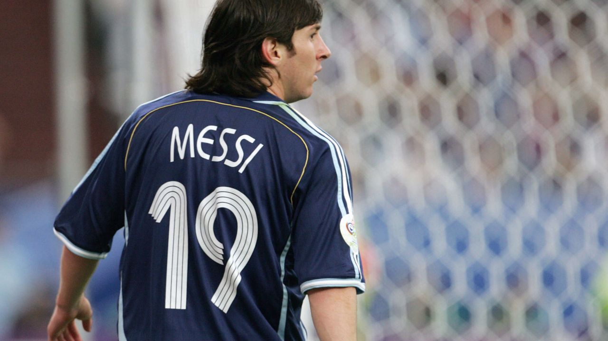
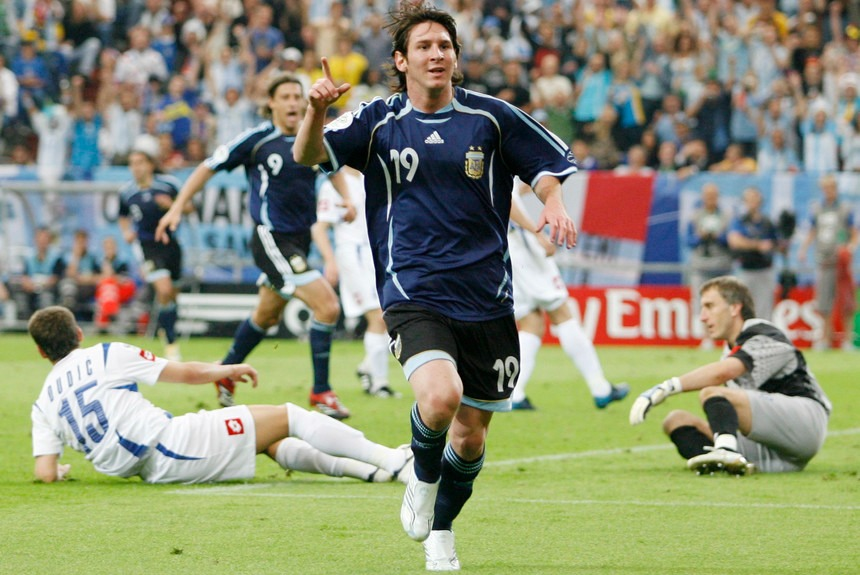

Escudero Santiago y Gregurak Máximo 4°10 Ing. Pablo Nogués 4-111.
Escudero Santiago y Gregurak Máximo 4°10 Ing. Pablo Nogués 4-111.
Escudero Santiago y Gregurak Máximo 4°10 Ing. Pablo Nogués 4-111.
Escudero Santiago y Gregurak Máximo 4°10 Ing. Pablo Nogués 4-111.

Un 1 de mayo del 2005 un joven Messi (en un partido de Liga ante el Albacete) recibe la bocha desde su lado izquierdo la cual fue enviada por el mismísimo Ronaldinho gaucho. Messi con un toque mágico la lanza por arriba del arquero dejando al mismo pintado para la imagen.

Con esto concluye una imagen épica con ambos jugadores caminando sobre el campo de juego como dioses del olimpo mirando cada centímetro de la cancha como si fuera una perfecta.
Esto resume la grandeza de ambos astros.

1 de marzo del 2006 Messi disputaba una cita mundialista ante la gigante Croacia de Luka Modric. Con el 19 en la espalda, Messi demostraba por qué él es el mejor.
La presión continua de Messi hacia los defensas croatas fuerza el error de los mismos robándoles la bocha; con un regate fantástico se quita al primer defensa y con la zurda define al palo izquierdo.
